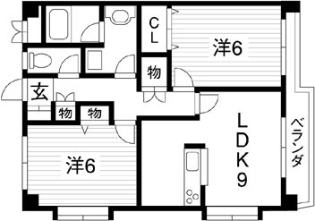

- トップ >
- おすすめ物件
おすすめ物件
今月のおすすめ賃貸物件です。人気の賃貸物件をピックアップしています。あなたにぴったりのお部屋を見つけてください。
スカーレットタワー青島
浜松町駅より徒歩9分の2LDK。充実設備のリノベーション物件。室内から望むオーシャンビューは壮観です。
間取り
おすすめポイント
窓から見える風景が再生されます。再生ボタンをクリックしてください。
物件詳細
| 住所 | 東京都港区海岸1丁目 |
|---|---|
| 最寄り駅 | 浜松町駅より徒歩9分 |
| 構造・種別 | 鉄骨鉄筋コンクリート・マンション |
| 築年月 | 1995年3月 |
| 向き | 南東 |
| 階/階建 | 4階/8階建 |
| 家賃 | 19万5千円 |
| 管理費 | 1万2千円 |
| 面積 | 51.54平方メートル |
| 設備 | オートロック、TVモニタ付インターホン、エアコン、ベランダ、ガスファンヒーター、エレベーター、宅配ボックス、CATV、BS・CSアンテナ、インターネット対応 |
| 敷金/礼金 | 2か月分/1か月分 |
| 更新料 | 1か月分 |
| 情報更新日 |